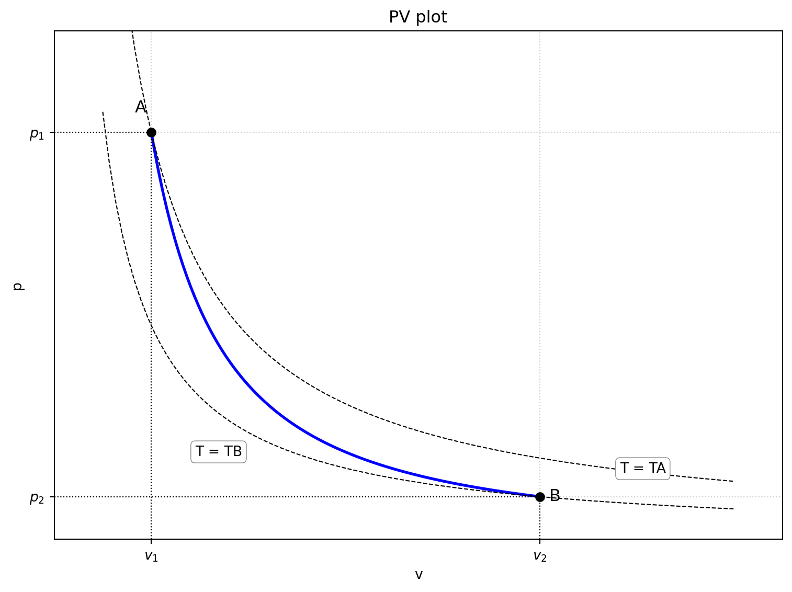

Code
import matplotlib.pyplot as plt
import numpy as np
def plot_pv_diagram():
# 理想気体の比熱比 (γ) を設定
# 断熱変化は PV^γ = const で表される
gamma = 1.4 # 単原子分子理想気体の場合 5/3 = 1.67, 二原子分子理想気体の場合 7/5 = 1.4
# 点 A の状態量
PA = 4.0 # P軸のスケールに合わせて適当な値に調整
VA = 1.0 # V軸のスケールに合わせて適当な値に調整
TA = PA * VA # PV = nRT なので，T は PV に比例すると考えられる
# 点 B の状態量 (断熱変化による)
# PB * VB^gamma = PA * VA^gamma
# ここでは，VB を仮定して PB を計算する
VB = 5.0 # VAより大きい値で，グラフに収まるように適当に設定
PB = PA * (VA / VB)**gamma
# 等温変化の計算 (PV = const)
# T = TA の等温線
V_iso_TA = np.linspace(0.5, 7.0, 100) # 広めの範囲でプロット
V_iso_TB = np.linspace(0.5, 7.0, 100) # 広めの範囲でプロット
P_iso_TA = (PA * VA) / V_iso_TA
P_iso_TB = (PA * VB) / V_iso_TB
# T = TB の等温線
# TB = PB * VB
P_iso_TB = (PB * VB) / V_iso_TA # 同じV範囲で計算
# 断熱変化の計算 (PV^gamma = const)
V_adiabatic = np.linspace(VA, VB, 100) # AからBまでの範囲
P_adiabatic = PA * (VA / V_adiabatic)**gamma
# Matplotlibでプロット
plt.figure(figsize=(8, 6))
# 断熱変化の曲線 (AからB)
plt.plot(V_adiabatic, P_adiabatic, color='blue', linewidth=2, label='断熱変化')
plt.plot([VA, VA], [0, PA], 'k:', linewidth=0.8) # 垂直な点線
plt.plot([0, VA], [PA, PA], 'k:', linewidth=0.8) # 水平な点線
plt.plot([VB, VB], [0, PB], 'k:', linewidth=0.8) # 垂直な点線
plt.plot([0, VB], [PB, PB], 'k:', linewidth=0.8) # 水平な点線
# 等温変化の曲線
plt.plot(V_iso_TA, P_iso_TA, 'k--', linewidth=0.8, label='等温変化')
plt.text(V_iso_TA[-1] * 0.9, P_iso_TA[-1] * 1.1, f'T = TA', fontsize=10, ha='right', va='bottom',
bbox=dict(boxstyle="round,pad=0.3", fc="white", ec="gray", lw=0.5))
plt.plot(V_iso_TB, P_iso_TB, 'k--', linewidth=0.8)
plt.text(V_iso_TB[20] * 0.8, P_iso_TB[20] * 0.8, f'T = TB', fontsize=10, ha='left', va='top',
bbox=dict(boxstyle="round,pad=0.3", fc="white", ec="gray", lw=0.5))
# 点 A と 点 B のプロット
plt.plot(VA, PA, 'ko', markersize=6)
plt.text(VA * 0.95, PA * 1.05, 'A', fontsize=12, ha='right')
plt.plot(VB, PB, 'ko', markersize=6)
plt.text(VB * 1.02, PB * 0.9, 'B', fontsize=12, ha='left')
# 軸ラベルとタイトル
plt.xlabel('v')
plt.ylabel('p')
plt.title('PV plot')
# 軸の範囲を設定
plt.xlim(0, 7.5)
plt.ylim(0, 5.0)
# 凡例
# plt.legend() # 等温変化と断熱変化の凡例は曲線上に直接記述した方が見やすいかも
# グリッド
plt.grid(True, linestyle=':', alpha=0.6)
# 軸の目盛りとラベル
plt.xticks([VA, VB], [f'$v_1$', f'$v_2$'])
plt.yticks([PB, PA], [f'$p_2$', f'$p_1$'])
plt.tight_layout()
plt.show()
# 関数を呼び出してグラフを表示
plot_pv_diagram()
